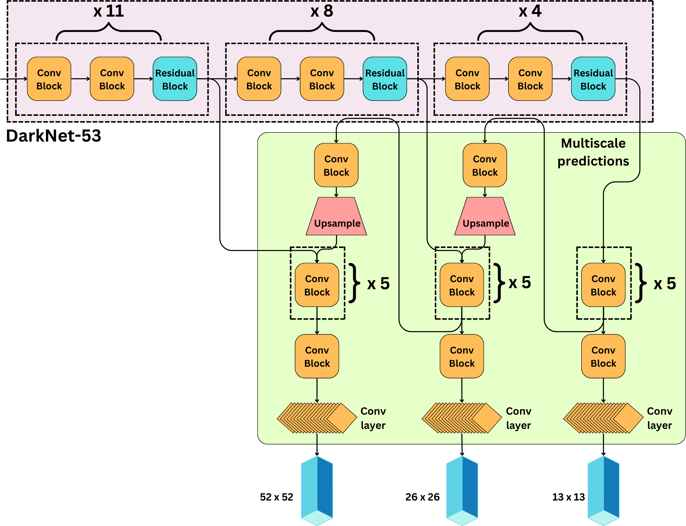

History of Object Detection

Timeline

Yolo Models’ performance with time
YOLO v1
One key advantage of YOLO over other object detection methods is its speed (~45fps), making it suitable for real-time object detection tasks.
However, it tends to be less accurate with small objects and objects that are close together due to the grid system it uses.
Dataset: PASCALVOC
Image: 7x7 Grids
Image: 448x448 fixed
YOLO v2
- Introduced anchor boxes, the Darknet-19 architecture, and fully convolutional predictions.
Dataset: PASCALVOC + COCO
Image: 13x13 Grids
Image: 320x320 - 608x608 for Detections for variable input size
Anchor Boxes
Batch Norm
Arch: DarkNet-19: Variant of vgg
YOLO v3
Introduced Backbone + Neck based architecture naming
Arch: DarkNet-53: Variant of ResNet
+Residual Connections
Introduces the concept of “feature pyramid networks” (FPN)
+Multi-scale predictions: 13x13, 26x26, 52x52 # multi-scale predictions
YOLO V4
paper with more emphasis on optimizing the network hyperparameters and an IOU-based loss function.
Architecture: CSP: inspired by ResNet
Backbone + Neck + Head
k-means clustering for Anchor Boxes
Yolo v5
Arch: based on the EfficientNet
Dynamic Anchor Boxes
CIoU loss
Improved SPP from Yolov4
Yolo v6
Arch: Based on EfficientNet architecture called EfficientNet-L2
Dense Anchor Boxes
Yolo v7
Focal Loss
608x608 while earlier versions were 416x416
YOLOv8
built on these advancements, introduced features like anchor-free detection and Neural Architecture Search (NAS), making the model even more adaptive and efficient. YOLOv8 also enhanced real-time performance and accuracy, particularly in complex, dynamic environments.
YOLOv9
(released in early 2024) introduced Programmable Gradient Information (PGI) and GELAN to improve training efficiency and feature aggregation, offering faster and more accurate object detection without increasing computational costs. These innovations enhance its performance in real-time tasks.
YOLOv10
(released in May 2024) builds on these advancements with a dual-pathway system that eliminates Non-Maximum Suppression (NMS) during inference, improving both speed and accuracy. YOLOv10 also introduces large-kernel convolutions and partial self-attention, making it highly efficient for dynamic, real-time applications like autonomous driving and industrial automation
YOLO V1
A. Labeling the data:
In YOLO v1 the grid size is 7 x 7.
A grid cell is labeled to contain an object only if the center of the bounding box is in it. If the grid cell contains a center, the “objectness” is labeled 1 and 0 otherwise.
B. Predictions:
For 1 grid cell we predict: 5B + C paramters
For whole image divided into S x S grids, we predict: S X S X (5B + C) params
where,
5: 4 bbox values (x,y,w,h) + 1 (confidence score) : (Formally, confidence = Probab(Object) x IOU(truth,pred). If no object exists in a cell, the confidence scores should be zero. Otherwise confidence score will be equal to the IOU b/w predicted box and the ground truth.)
B: number of bboxes predicted per grid cell, B=2 (author’s choice) (B is not related to the number of classes.)
C: number of classes (class probabilities) : (conditional class probabilities, Pr(class_i|Object))
If we call P(object) the probability there is an object in a box b and P(c|object) the probability that the object is of class c, then the score for the class c in the box b in simply
\(P(c) = P(c|\text{object})\times P(\text{object})\)
Architecture
Fine-details: 1. To improve the speed of the network, they alternated convolutional layers with 3x3 kernel size and convolutional layers with 1x1 kernel size. How?
Ans:
Let’s, we have a feature map of size 56 x 56 x 192 and we want to apply a convolution layer of 256 filters of kernel size 3 x 3. For each filter, we have:
\(56 \times 56 \times 192 \times 3 \times 3 = 5,419,008 \text{ computations}\)
For all the filters we have:
\(5,419,008 \times 256 = \sim 1.4 \text{B computations}\)
vs
let’s apply a convolution layer of 128 filters of kernel size 1 x 1 first:
\(56 \times 56 \times 192 \times 1 \times 1 \times 128 = 77,070,336 \text{ computations}\)
and the resulting feature map is of size 56 x 56 x 128. Now, let’s apply our convolution layer of 256 filters with kernel size 3 x 3
\(56 \times 56 \times 128 \times 3 \times 3 \times 256= 924,844,032 \text{ computations}\)
Adding 77,070,336 +924,844,032=1
Therefore applying a 1 x 1 convolution prior to the 3 x 3 convolution reduces the dimensionality of the tensors and saves ~ 0.4B computations.
The architecture uses Conv, Maxpool and Linear layers such that at the end the output should be 7x7x30. This was done because image was divided into 7x7 grids and for each grid, we are predicting 20 class probabs and 2 bboxes containing 5 values each (4 xywh + 1 conf). This was a customized setting applicable for PASCAL VOC dataset that had 20 classes. (Actualy the last layer is a FC layer not COnv layer. nn.Linear (4096, 7*7*30))
Training
For each image we prepare ground truth as 7x7x30 tensor as explained in the start. Model also outputs 7x7x30 tensor then, using the loss explained below the model was trained.
Loss
Mean squared error loss for everything!!!
Let’s break loss line by line
The identity function is 0 when there is no object or the current bounding box isn’t the responsible one. In other words, we only calculate the loss for the best bounding box. So the first line of the equation is the sum of squared differences between the predicted and actual midpoints of the objects in all grid cells which have an object in them and are the responsible bounding box.
The second line is the sum of the squared differences between the square roots of the predicted and actual widths and heights in all grid cells which have an object in them. These are square rooted for reasons explained earlier.
The third line is just the squared difference between the predicted class probabilities and the actual class probabilities in all cells which have an object.
The fourth line is the same but for all cells which don’t have an object in them.
The reason these two (3rd and 4th lines) are split up is so that we can multiply the fourth line by the noobj coefficient to punish the model less severely if it misclassifies when there is no object present.
Q: Why square root used for bbox size loss and not normal dimension?
A: Because it gives different weights to bboxes of different sizes. We want to make this error larger for smaller bboxes
Let’s understand by example.
Case-1 : Actual width = 100, Predicted width = 98
Case-2 : Actual width = 4, Predicted width = 2
In both the case the deviation is same i.e. 2 but the quality of bbox for small bbox (Case-2) is very poor while quality of BBox predicted in Case-1 is really good.
Loss with normal width
Case-1 Loss: (100-98)**2 = 4
Case-2 Loss: (4-2)**2 = 4
Loss with square-root width
Case-1 Loss: (10-9.899)**2 = 0.01
Case-2 Loss: (2-1.414)**2 = 0.343
NMS
- Find all the boxes with a high objectness score. This is the level of confidence of the model that there is an object in the grid cell. We typically have a confidence threshold, so any box with a lower score is not considered.
- We then choose the box with the high confidence scores and remove the boxes that have high overlap i.e. IoU with the the highest confidence bbox. (Overlap is decided by IOU IoU)

Exact Algo
Suppose we have B: bboxes preds, C_thresh: confidence thresh (objectness score) for each bbox
iou_thresh: iou overlap threshold
Filter bboxes with confidence > C_thresh. Suppose now B -> updated B
Sort bboxes in B_new by confidence scores in descending order
Initialize a new variable F_bboxes to store final bboxes
while B_new is not empty:
4.1 for b1 bbox in B_new
4.2 Add b1 to F_bboxes
4.3 Remove b1 from B_new
4.4 for remaining b2 in B_new:
4.4.1 if IoU(b1, b2) >= iou_thresh -> remove b2 from B_new
# Suppose B contains BBoxes as list of list of 5 coordinates (x,y,w,h,c) : where c is confidence (objectness score)
B = sorted(B, key=lambda x: x[4], reverse=True) # initial_bboxes
F = [] # final_bboxes
while len(B)!=0:
b1 = B.pop(0)
F.append(b1)
remaining_bboxes = []
for b2 in B:
if iou(b1, b2) < iou_thresh:
remaining_bboxes.append(b2)
B = remaining_bboxesProblems:
1.1 Did not account for this Edge case: In the case the grid cell contains 2 objects, suppose cat and a dog, we need to choose one of the classes as the label for the training data.
1.2 YOLO can only predict a limited number of bounding boxes per grid cell, 2 in the original research paper. And though that number can be increased, only one class prediction can be made per cell, limiting the detections when multiple objects appear in a single grid cell. Thus, it struggles with bounding groups of small objects, such as flocks of birds, or multiple small objects of different classes.
YOLO imposes strong spatial constraints on bounding box predictions since each grid cell only predicts two boxes and can only have one class. This spatial constraint limits the number of nearby objects that our model can predict.
The model struggled with small objects that appear in groups, such as flocks of birds
THeir loss function treats errors the same in small bounding boxes versus large bounding boxes. A small error in a large box is generally benign but a small error in a small box has a much greater effect on IOU
Detections at multi-scale not supported.
YOLOv2 (aka YOLO9000)
What’s different from YOLOv1?
Introduced Anchor Boxes: This allows the algorithm to handle a wider range of object sizes and aspect ratios. Used BatchNorm Expanded dataset: PASCAL VOC + COCO Flexible Image Size: 320x320 to 608x608: Multi-scale training. This helps to improve the detection performance of small objects.
In YOLOv2 (and beyond), instead of predicting arbitrary bounding boxes directly, the model predicts offsets from a fixed set of predefined boxes, called anchor boxes or prior boxes.
The different classes are this time passed through a Softmax activation function and the loss function is using cross-entropy instead of MSE.
Grid size = 13x13 to ensure better detection of smaller objects
Anchor Boxes
Anchor Boxes: Sort of priors about object shapes; they guide the model in doing better predictions.
Instead of directly predicting the x & y i.e. bbox centers, the model predicts tx and ty such that:
\(x = \sigma(t_x)\)
\(y = \sigma(t_y)\)
where, \(\sigma\) is sigmoid: \(\sigma(a) = \frac{1}{1 + \exp - a}\)
To get width bw and bh for the bbox, the model predicts tw and th such that
\(b_w = p_w e^{t_w}\)
\(b_h = p_h e^{t_h}\)
where, \(p_w\) and \(p_h\) are already known when we calculated anchor boxes (explained later).
The model predicts to (objectness score) also such that:
\(P(\text{object})= \sigma(t_o)\)
Q: Why \(\sigma\)?
A: Makes x and y bounded between 0 and 1 -> center is always within the cell
How to calculate anchor boxes?
K-means algorithm with K=5 (i.e. compute 5 anchors) over the trainig data, clustering together similar shapes.
Steps:
They ran K-Means clustering on the bounding boxes in the training set.
Each bounding box is treated as a 2D point: [w,h]
Traditional K-Means uses Euclidean distance, but that doesn’t work well for boxes (e.g., a tall-skinny box and short-wide box can have the same area and Euclidean norm but behave very differently).
Instead, they used a custom distance function:
d=1−IoU(box, cluster center)
So two boxes are close if their IoU is high.
After clustering:
5.1 They used the average width and height of each cluster to define an anchor box.
5.2 They selected K = 5, meaning each grid cell has 5 anchor boxes it can predict from.
Model Output:
For each anchor box, YOLOv2 predicts:
[tx, ty, tw, th, to] Where:
tx,ty : offsets from the cell
tw ,th: log-scale offset from anchor box dimensions
to: objectness score
NOTES:
- Normalize bounding box widths and heights to [0, 1] before clustering.
Why is this better than YOLOv1?
Ans: YOLOv1 predicted 2 arbitrary boxes per grid cell, regardless of dataset statistics.
YOLOv2 learns K well-distributed, representative shapes — making the model better at fitting real-world object shapes.
Architecture
Variant of vgg
DarkNet-19: Similar to Yolov1, but had BatchNorm for regularization, replaced last linear layer with conv layer
YOLOv3
What’s different from YOLOv2?
Ans: 1. Introduced Residual connections 2. Multi-scale predictions: 13x13, 26x26, 52x52 3. At each scale, 3 bboxes are predicted
This multi-scale module is going to be referred to as “neck“
Anchor Boxes
At each scale 3 anchor boxes so, total 9 anchor boxes were used in Yolov3.
Architecture (Backbone + Neck)
Variant of ResNet

At each scale, we predict 3 boxes (9 total). For each box, we predict [tx, ty, tw, th, to] as well as the probabilities of the different classes. If C is the number of classes, for each scale we predict:
\(N\times N \times 3 \times (5 + C) \text{ parameters}\)
This multi-scale module is going to be referred to as “neck“
Training:
Classes and the objectness score are activated by logistic regression and optimized using cross-entropy
\(L_{\text{objectness}}=\sum_{i \in \text{grid}}\sum_{j \in \text{boxes}}C_i\log\hat{C}_i\)
\(L_{\text{classes}} =\sum_{i \in \text{grid}}\mathbb{I}_{\{\text{if object in } i\}}\sum_{c\in \text{classes}} p_i(c)\log\hat{p}_i(c)\)
YOLOv4
Q: What’s new from YOLOv3?
Ans:
- Formally introduced network in 3 parts: Backbone, Neck, Head
- LeakyReLU replaced by Mish activation
- Residual blocks are replaced by Cross Stage Partial (CSP) blocks
- Ability to detect even smaller sized objects: 19 x 19, 38 x 38, and 76 x 76 grids
- Did a thorough evaluation of activation functions, bbox regression loss, data augmentation strategies, regularization methods, skip-connections, etc. in order to optimize the model
- Introduced IoU loss (CIoU loss) for regressing bbox coordinates.
Architecture
- Backbone: learns the feature map representations of the image
- Neck: that is the network that improves the receptive field of the backbone and allows for multi-scale predictions.
- Head: that is the end of the model that is responsible for making the predictions.
Backbone
Residual Blocks from YOLOv3 replaced by CSP Blocks
And replaced leakyrelu by mish
Neck
Neck is composed of a Spatial pyramid pooling (SPP) and a Path aggregation network (PANet).
- SPP - helps with image inputs of different sizes and resolution.
- PANet - is the network used to enable multi-scale predictions. The grid sizes are now 19 x 19, 38 x 38, and 76 x 76 allowing to detect very small objects.
Training
IoU loss
\(L_{\text{position-shape}} = 1 - IoU(\text{pred}, \text{truth})\)
However, this loss only works when the bounding boxes overlap, and would not provide any moving gradient for non-overlapping cases. This is resolved by adding a penalty term, capturing the distance between the bounding box centers:
CIoU Complete IoU loss
\(L_{\text{position-shape}} = 1 - IoU(\text{pred}, \text{truth}) + R(\text{pred}, \text{truth})\)
where
\(R(\text{pred}, \text{truth}) =\frac{\rho^2(b, b^{th})}{c^2} + \alpha v\)
where ⍴(b, bth) is the Euclidean distance between the bounding box centers, c is the diagonal length of the smallest enclosing box covering the two boxes, and v imposes the consistency of the aspect ratio.
Resources:
- https://arxiv.org/pdf/1506.02640 (YOLOv1)
- https://arxiv.org/pdf/1612.08242 (YOLOv2)
- https://arxiv.org/pdf/1804.02767 (YOLOv3)
- https://arxiv.org/pdf/2004.10934 (YOLOv4)
- https://arxiv.org/pdf/2304.00501 (Comparisons from YOLOv1 to YOLOv8)
- https://newsletter.theaiedge.io/p/deep-dive-how-yolo-works-part-1-from (Summary from YOLOv1 to YOLOv4)
- https://www.v7labs.com/blog/yolo-object-detection (Summary from YOLOv1 to YOLOv7)
- https://medium.com/analytics-vidhya/yolo-explained-5b6f4564f31 (Summary of Yolo v1)
Questions
- 1D convolution
- 1x1 kernel size convolution
- why 1x1 and not 3x3 ?
Ans: Speeds up computation. For each prediction in 3x3, we need to perform 9 computations. whereas for 1x1 only 1 computation is required.
- Yolov1 architecture
- Why once? How once? Why grids? What adv? What disadv?
- IoU loss? Modern yolo loss vs old yolo losses?
- NMS code
- Why LeakyRelu?
- Why replace LeakyRelu by Mish activations?
- Class label smoothing?
- Problem with IoU loss? and solutions around it?
- Exact difference in training pipeline of 2 stage vs 1 stage object detection
- Code for Anchor Boxes with K-Means?